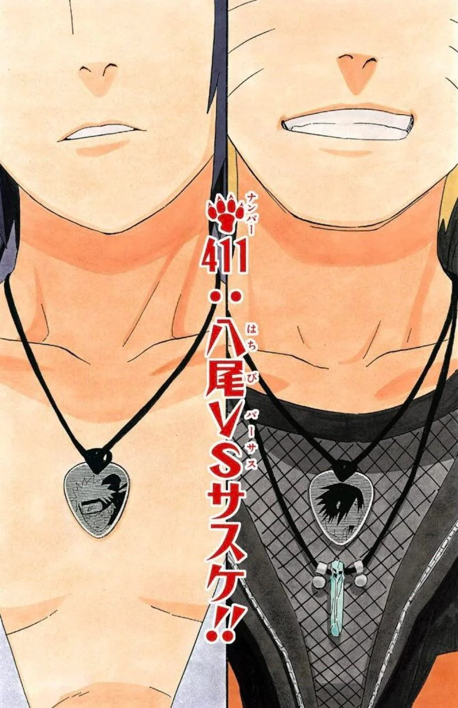

SCANDAL
Liars, Cheaters, Scammers: Naruto Found on ROMANTIC DATE with Sasuke the day of his DAUGHTER'S BIRTHDAY
November 17th, 2025
How a messy link, a shadow clone, and an angry bitter loser tore down the Hokage's marriage.

So picture this, sweetheart: I’m walking through Konoha, minding my fabulous business, edges laid, chakra glowing, when somebody whispers:“Girl… did you hear about Naruto?”And I said, “What happened NOW?”Because when a man has unlimited chakra and absolutely no schedule management skills, the drama practically writes itself.
Instead of being at his daughter Himawari’s birthday party like a normal parent, Naruto Uzumaki—yes, the Hokage—was seen at The Moonlit Lotus, the most romantic restaurant in the village, with none other than Sasuke Uchiha. And not sitting across like two coworkers. No. They were sitting like it was “Date Night: Shinobi Edition.” They had:
- A shared dessert
- Two spoons
- Candlelight
- Soft Music
- And enough eye contact to power a whole romance series
Naruto leaned in to wipe cream off Sasuke’s face. Sasuke let him. The waiter said the moment had “main character energy.” I believe it.
TenTen's Messy Hijinks
Enter Tenten, bless her heart. She already had a tough morning—Temari had given her a very intense sparring lesson (and by that I mean Tenten did not win). She was just trying to grab some comfort food. Just a bowl of noodles. Just a peaceful moment. But she walked right into Naruto and Sasuke looking like the final scene of a love drama. She froze. Naruto froze. Sasuke calmly pretended she was part of the wall. Tenten left the restaurant whispering, “I did not see that. I absolutely did not see that.” Poor girl needs a break.